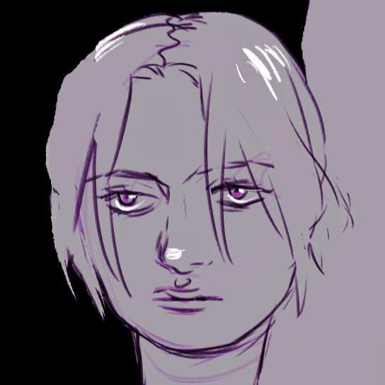

Support my work on
Support my work on About me
You can just call me Roxy, I mostly paint higly emotive pieces featuring sad women.

Fandoms
watching:
House of the Dragon, A Series of Unfortunate Events, Phantom of the Operareading:
Not a fandom but lately I've been reading early 1900s Russian history and Victorian era medical practice (the history of surgery).Collabs/Projects
- 😙
resources
Site template (C) CC-LINK
Social Media
If you want to reach me elsewhere you can find me at the following places:
Bluesky☁ Instagram📷 Twitch🎮 Ko-fi☕